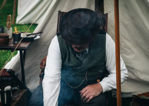

サイトの目的
若年層の麻雀離れが深刻化している昨今麻雀へのネガティブイメージが、ひとり歩きしている陽の当たらない暗室で、暗く不健康な人が集いギャンブルに人生を費やすそんなイメージを払拭すべく新たな麻雀の提案を目的としたサイトですアイデア
-
管理者個人の理想、陽の当たる場所で開放的に麻雀を楽しむ例えばキャンプ場、電化製品がない中でも麻雀は楽しめるテントの中で気の合う仲間と夜通し卓を囲む『仲間が集う』実はこれが麻雀の利点でもあり【欠点】でもある
大人になるにつれ学生時代のように４人が揃う時間がない、というのが現実しかも長時間ともなれば余計に結果せっかく麻雀をしていた人まで離れていく結果にフリーで打つという選択もなくはないが意外とハードルは高いそこでもう一つの提案
『お一人様サイト』の企画進行中自分の空き時間に同じように空いているメンバーが気軽に揃うマッチングサイト単独の人（ピン）が複数集う、ピンの複数形『ピンズ』それがこのサイト名です下記の一人の老人の写真もともと何をしている写真かは不明ですしかし私にはアイデアのまとめとも思える運命的な写真です
開放的な空間で彼は麻雀を愛する仲間に出会っているのかもしれません

- キャンプ＋麻雀＝マージャンピング
- 青空マージャン